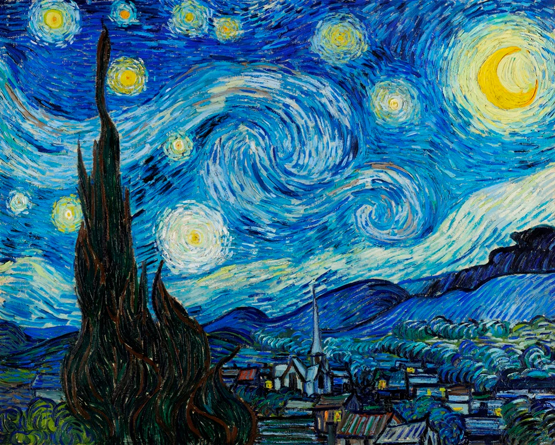
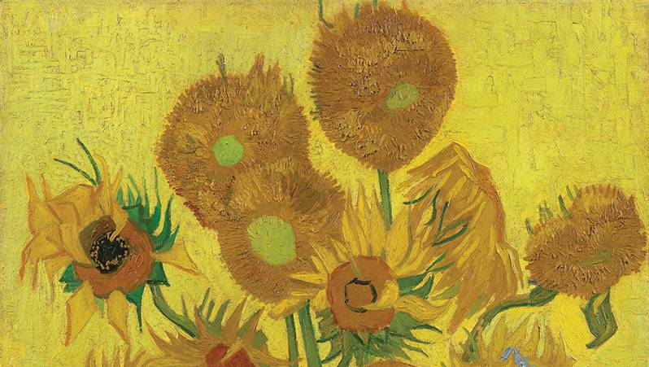

Vincent van Gogh holland posztimpresszionista festő volt, aki élénk színeiről és expresszív ecsetkezeléséről ismert. Élete során kevés elismerést kapott, de ma a művészettörténet egyik legnagyobb alakjaként tartják számon. Leghíresebb művei közé tartozik Csillagos éj, Napraforgók és Önarcképei. Lelki betegségekkel küzdött, és 37 évesen halt meg.
| Cím | Év | Technika |
|---|---|---|
| Csillagos éj | 1889 | Olaj, vászon |
| Napraforgók | 1888 | Olaj, vászon |
Bővebben: Wikipedia - Van Gogh
 